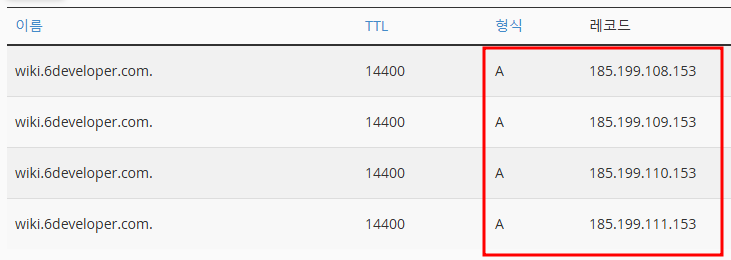

🔗 사용자 정의 도메인 설정
🔈 도메인 준비
💎 DNS 레코드 설정
사용 가능한 DNS 레코드의 종류는 여기에서 확인이 가능하며 필자의 경우 A 레코드를 사용했다.
A 레코드 추가
호스팅 사이트마다 사용하는 방식은 다를 수 있지만 아래와 같이 4종류의 레코드를 등록한다.
필자는 A 레코드를 사용했지만 기호에 맞게 등록하기로 한다.

🍨 Github 도메인 등록
Github Pages를 운영중인 Repository에 도메인을 등록한다.
도메인 등록
Settings ➡ Pages ➡ Custom domain
DNS 레코드 설정을 마친 도메인을 입력한다.

Enforce HTTPS 설정
도메인 등록이 완료되면 약 15분 후 체크박스가 활성화 된다.
항상 https로 접속하기 위해서 Enforce HTTPS에 꼭 체크해주자.

접속 확인
등록한 도메인으로 접속하면 *.github.io 대신 도메인으로 접속이 되는걸 확인할 수 있다.
*.github.io 접속시 등록한 도메인으로 redirect 된다.

👋 마치며
Jetbrains 신봉자인 내 눈 앞에 나타난 Writerside로 기술블로그를 시작했다. 티스토리, 네이버 블로그, 벨로그를 거쳐서 Jekyll 테마를 활용한 Github Pages까지 운영을 해봤지만 드디어 똥손이 운영하기에 가장 적합한 도구를 찾은 것 같다.
앞으로 프로젝트를 하면서 천천히 자료를 추가해야겠다.
Last modified: 05 12월 2024